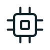
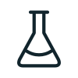

국내 특허등록절차,
시작부터 등록까지
아이디어 상담부터 출원, 심사, 등록까지의 실제 진행 순서를 확인하세요.
VON이 체계적으로 도와드립니다.
특허등록절차 한눈에 보기
아이디어 상담부터 등록까지, 6단계로 진행됩니다.
01발명 상담
02선행기술 검토
03명세서 작성 및 출원
04심사청구
05의견서·보정서 대응
06등록
단계별 상세 안내
각 단계별 주요 내용과 고객 준비사항, VON의 지원을 간단히 확인하세요.
| 단계 | 절차 | 주요 내용 | 고객 준비 | VON 진행 |
|---|---|---|---|---|
| 01 | 발명 상담 | 아이디어를 구체화하고 특허 가능성을 검토합니다. | 발명 아이디어 개요 · 관련 자료 | 1:1 발명 상담 · 특허 가능성 검토 |
| 02 | 선행기술 검토 | 국내외 선행기술을 조사하여 신규성과 진보성을 검토합니다. | 핵심 기술 내용 · 관련 자료 | 선행기술 조사 · 특허 가능성 분석 |
| 03 | 명세서 작성 및 출원 | 보호 범위를 정하는 명세서를 작성하고 출원합니다. | 기술 설명 자료 · 도면 또는 사진 | 명세서 작성 및 검토 · 특허 출원 |
| 04 | 심사청구 | 출원 후 일정 기간 내에 심사청구를 진행합니다. | 심사청구 시점 결정 | 심사청구서 제출 · 심사 진행 관리 |
| 05 | 의견서·보정서 대응 | 거절이유가 통지된 경우 의견서와 보정서를 제출하며 대응합니다. | 거절이유서 확인 · 보완 아이디어 검토 | 의견서·보정서 작성 · 심사관 의견 대응 |
| 06 | 등록 | 심사를 통과하면 특허권이 설정되어 공식적으로 등록됩니다. | 등록 결정 내용 확인 | 등록 절차 안내 · 등록 후 권리 관리 지원 |
다양한 분야의 변리사와 전문팀이 함께합니다
기술을 넘어 비즈니스까지, 특허등록과 관련된 모든 과정을 전문가와 함께합니다.

전자·ICTAI, SW, 반도체기계·메카트로닉스기계, 기구, 소자

화학·소재화학, 소재, 제약바이오·의료생명공학, 의료
기술사업화기술 라이선싱
조사·분석선행기술, FTO
기업인증이노비즈 인증
상담 전 준비하면 빨라지는 자료
자료가 있으면 보다 정확하고 빠른 상담이 가능합니다.
발명의 개요 및 목적
관련 시장 정보 (선택)
제품 또는 기술 관련 자료
선행기술 자료 (선택)
구체적 특징 및 차별 기술 정보
추가로 검토하고 싶은 내용
지금, 전문가와 상담하세요
아이디어 단계부터 등록 이후까지, 전문 변리사가 친절히 안내해 드립니다.